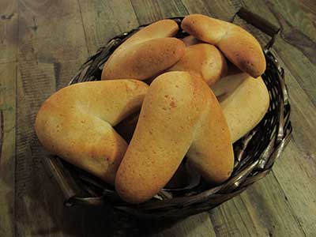

Elaboración paso a paso
Paso 1 / 15
Precalienta el horno a 250 grados.
Paso 2 / 15
En un bol grande mezcla el queso rallado y la harina de yuca. Puedes mezclar ayudándote con una espátula o
usar las manos. Mezcla hasta que se haga una masa que se pueda trabajar.
Paso 3 / 15
Agrega los huevos en el centro de la masa y vuelve a mezclar.
Paso 4 / 15
Agrega la mantequilla, el azúcar y el polvo para hornear.
Paso 5 / 15
Luego vas a agregar la leche poco a poco.
Paso 6 / 15
Mezcla todo el tiempo, sin parar, hasta que consigas una consistencia homogénea.
Paso 7 / 15
Lleva la masa a una mesa limpia y seca. Puedes agregarle un poco de harina de yuca para trabajar más
fácilmente.
Paso 8 / 15
Amasa durante 15 minutos.
Paso 9 / 15
Ahora vas a tomar una porción de la mezcla y arma una bola de pequeño tamaño, más pequeñas que el puño de tu
mano. Puedes hacer otras formas si lo prefieres (mira la foto de la receta).
Paso 10/ 15
Procura que la bola sea lo más redonda posible.
Paso 11 / 15
Pon la bolita en una bandeja previamente engrasada.
Paso 12 / 15
Haz lo mismo con el resto de la masa. Muchas bolitas redondas pequeñas (o la forma que quieras).
Paso 13 / 15
Cuando tengas la bandeja con varias de estas bolas métela al horno durante 10 minutos. Recuerda que lo
tenías precalentado desde antes a 250 grados.
Paso 14 / 15
Cuando hayan transcurrido 10 minutos de cocción, baja la temperatura a 175 grados y continúa cocinando por
10 minutos más.
Paso 15 / 15
Una vez transcurrido el tiempo pues ya está, tienes unos deliciosos pan de yuca. ¡a disfrutar!
Recetas del pan de yuca
Pan De Yuca

Ingredientes
500 gr de harina de yuca
500 gr de queso blanco fresco rallado
200 ml de leche
2 huevos
50 gr de mantequilla
1 cucharadita de azúcar
2 cucharaditas de polvo para hornear